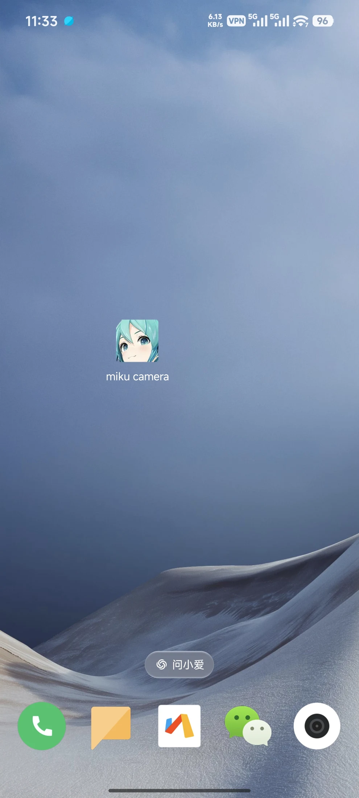
MIKU CAMERA / ANDROID
从桌面，
打开 Miku Camera
一款原生 Android 相机：拍摄 Miku 水印合影，也支持用 AI 将 Miku 融入照片。
- 普通模式内置 Miku 水印，打开即可拍摄。
- AI 模式从拍摄或相册选图开始，生成新的互动场景。
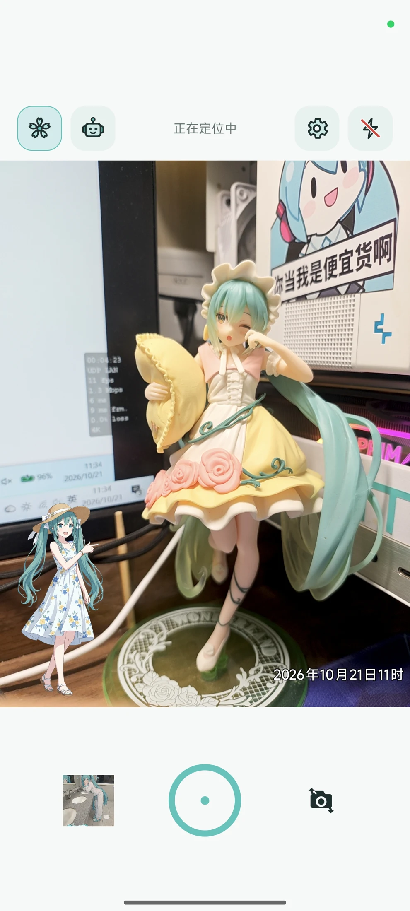
01 / CAMERA
进入取景框，
直接预览水印
Miku、时间与地点显示在取景画面中。取景框与成片保持一致，支持前后镜头及横竖屏拍摄。
- 对焦与曝光点击画面对焦，调整曝光和闪光灯。
- 从拍摄开始普通模式直接合成水印，AI 模式使用干净原图创作。
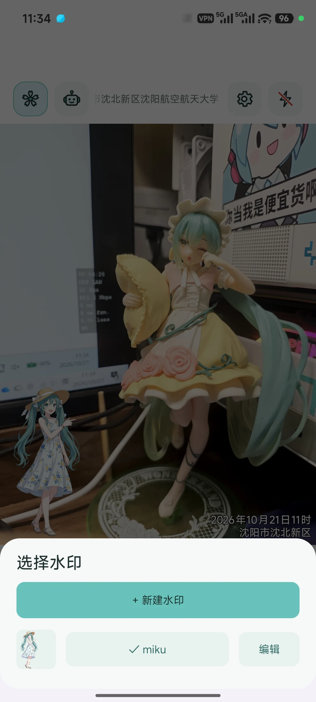
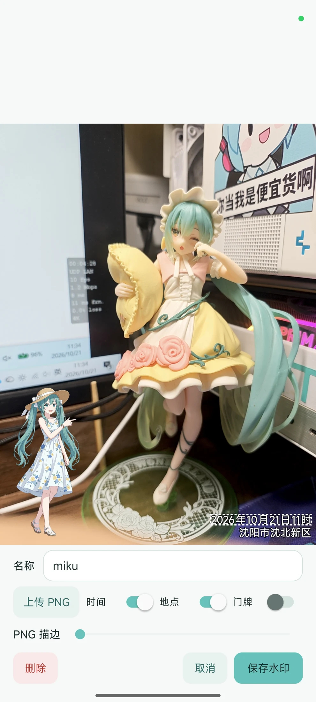
02 / WATERMARK
选择水印，
再调整它的样式
先从列表选择或新建预设，再上传 PNG，调整位置、旋转与描边，按需显示时间和地点。
- 水印列表新建、命名、编辑或删除，记住上次选择。
- 独立排版时间与地点不随 PNG 旋转，可选择门牌显示。
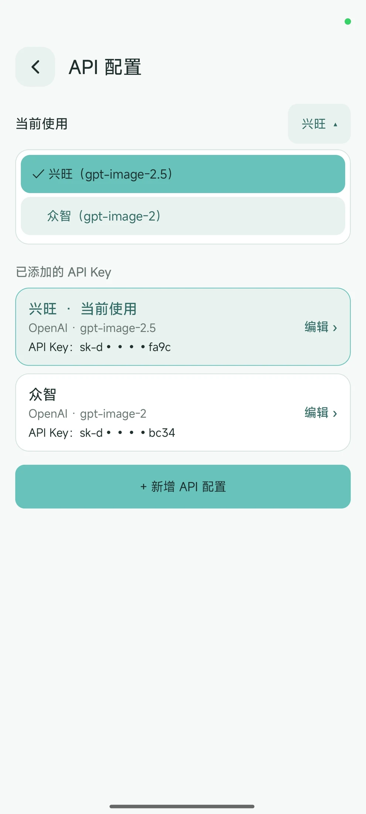
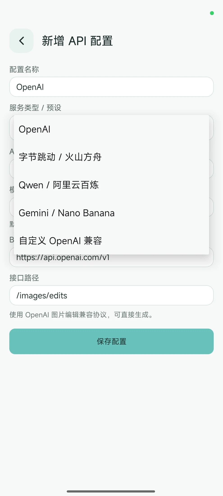
03 / API CONFIGURATION
配置 AI 服务，
按需切换模型
保存多套 API 配置，选择当前使用的服务；新增时设置协议、API Key、Base URL 与图像模型。
- 多套配置在已保存的配置之间切换，也可以继续编辑。
- 多协议支持OpenAI、Gemini、火山方舟、通义千问及 OpenAI 兼容接口。
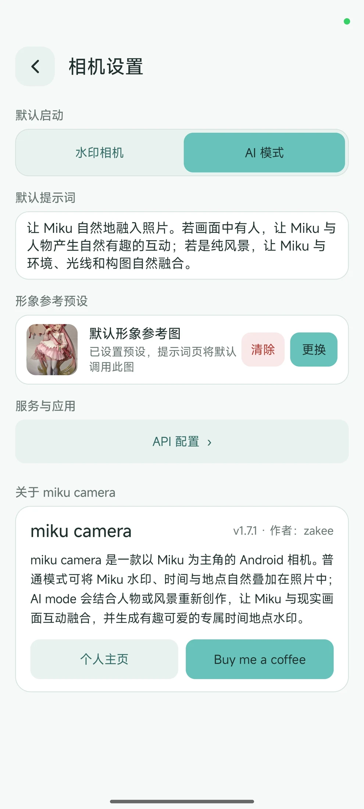
04 / CAMERA SETTINGS
设置默认模式，
保存创作偏好
选择默认进入水印相机或 AI 模式，编辑默认提示词，并设置下次创作使用的参考图。
- 形象参考预设更换或清除默认参考图，提示词页可直接调用。
- 服务与应用进入 API 配置，查看版本、应用说明与作者主页。
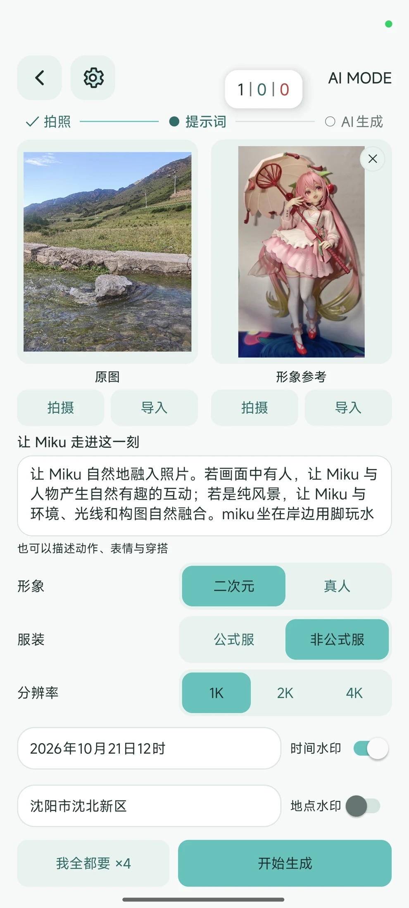
05 / AI CREATION
选好原图，
确认这一张的创作
拍摄或导入原图与参考图，编辑提示词；选择二次元或真人、服装、分辨率及时间地点水印。
- 形象与服装二次元 / 真人，公式服 / 非公式服。
- 生成参数1K / 2K / 4K；确认提示词后开始生成。
AI 模式需使用你配置的 API 服务。
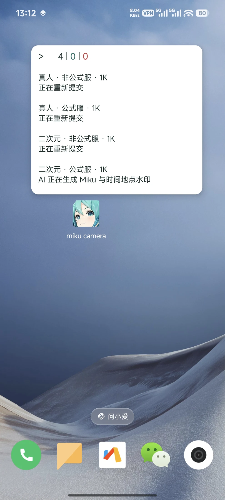
06 / BACKGROUND TASKS
回到桌面，
也能查看生成进度
AI 任务在后台继续处理，通过可拖动的悬浮窗跟进进度，不必一直停留在生成页面。
- 同时查看多项任务窗口列出形象、服装、分辨率与当前状态。
- 状态随任务更新截图展示四项任务，包括重新提交和正在生成。
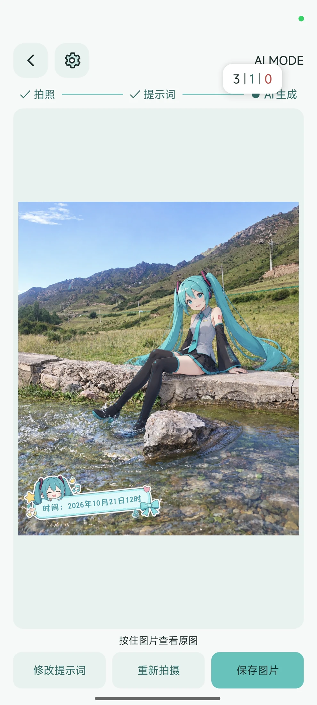
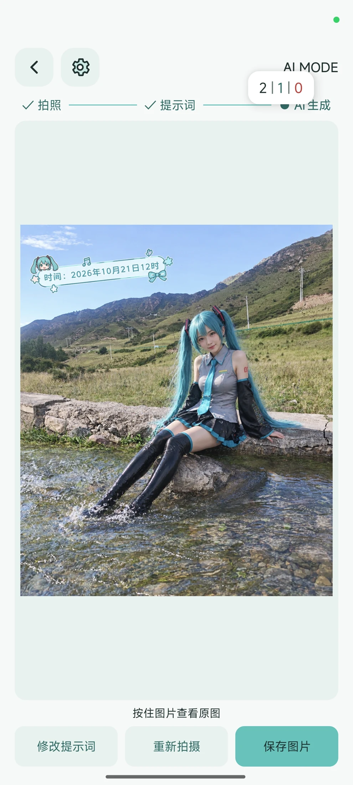
07 / CLASSIC OUTFIT
同一处风景，
两种形象的结果
先看公式服的生成结果：二次元与真人写实分别融入同一张山间溪流照片。
- 二次元形象保留动漫风格，与实拍风景组合。
- 真人写实形象用写实风格呈现 Miku，并生成时间地点水印。
应用内实际生成示例，效果随模型与输入变化。
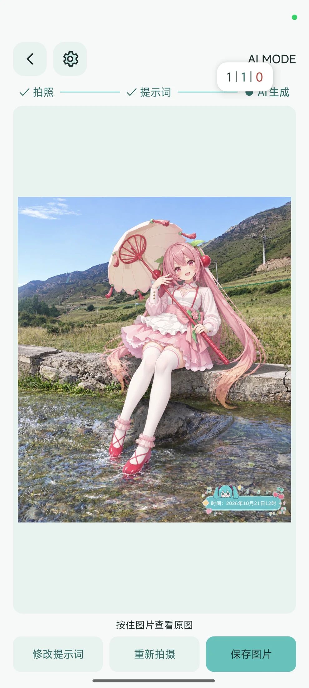
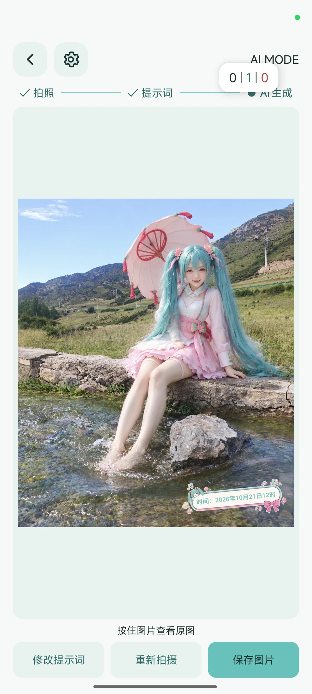
08 / REFERENCE OUTFIT & SAVE
再看参考造型，
对比并保存结果
同一组原图与参考图，继续查看非公式服的二次元、真人结果。按住图片对比原图，再决定保存内容。
- 继续修改返回修改提示词，或重新拍摄。
- 保存到相册保存 AI 图、原图或两张都保留，存入 Pictures / miku camera。
应用内实际生成示例，效果随模型与输入变化。
miku camera水印拍摄 · AI 创作
09 / DOWNLOAD
miku camera
从第一张照片开始
安装 Android 版，使用普通水印相机；配置自己的 API 服务后，即可开始 AI 创作。
- 普通模式在本机完成取景、水印合成与相册保存都在设备本地处理。
- 开源项目在 GitHub 查看源码与发布版本。